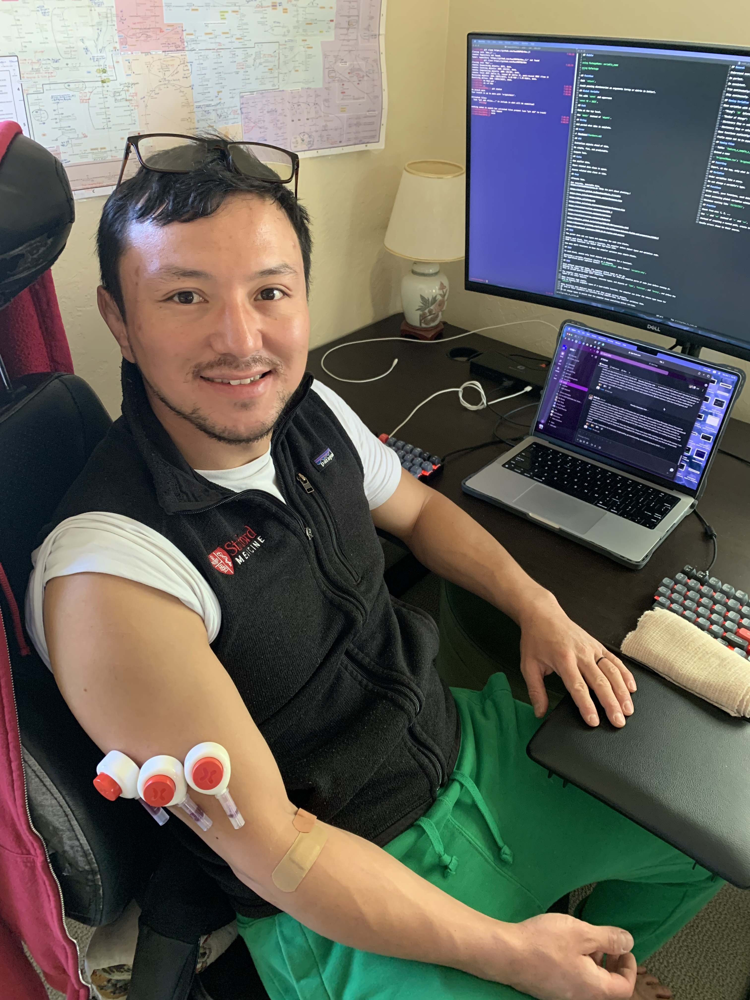

Hi, I'm Kwat 🥼
I'm a bioinformatician and a seventh-year MD-PhD candidate in the Mark Davis Laboratoryat Stanford School of Medicine 🧬
I'm a bioinformatician and a seventh-year MD-PhD candidate in the Mark Davis Laboratoryat Stanford School of Medicine 🧬